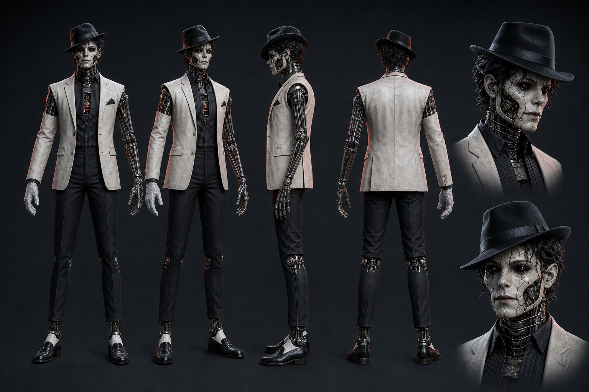
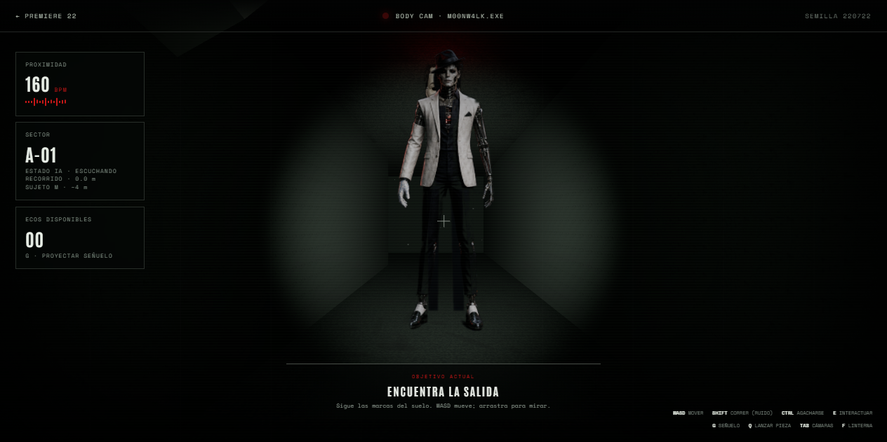
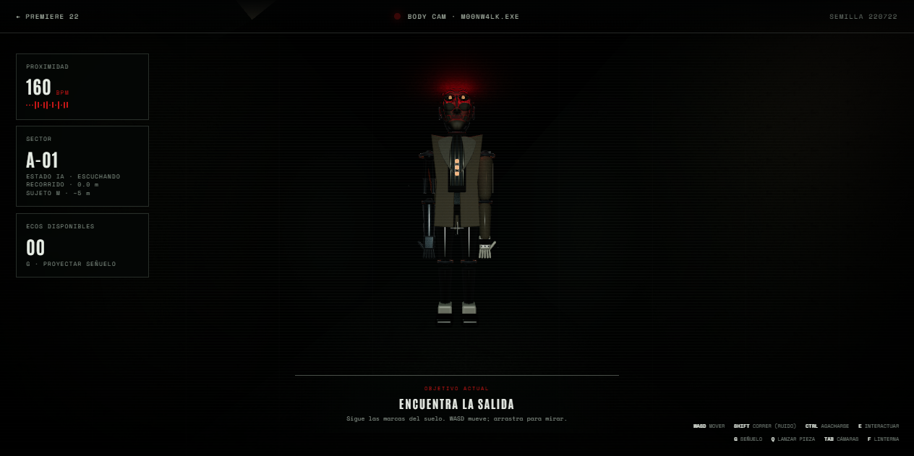
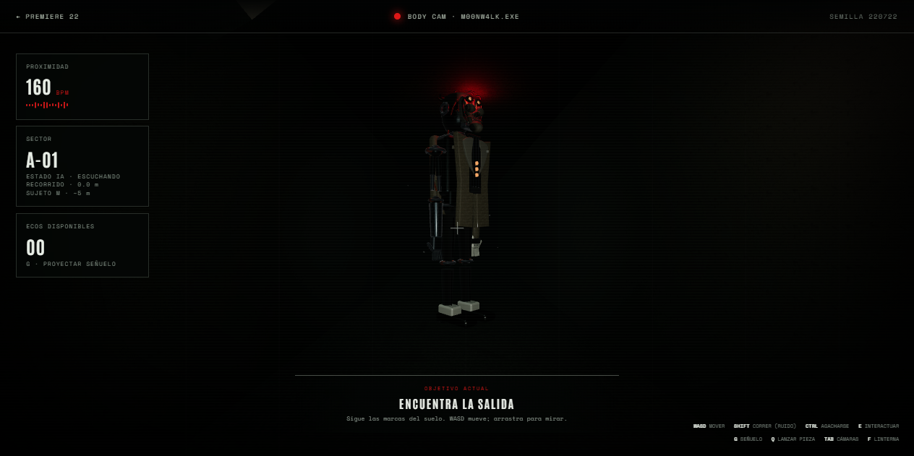
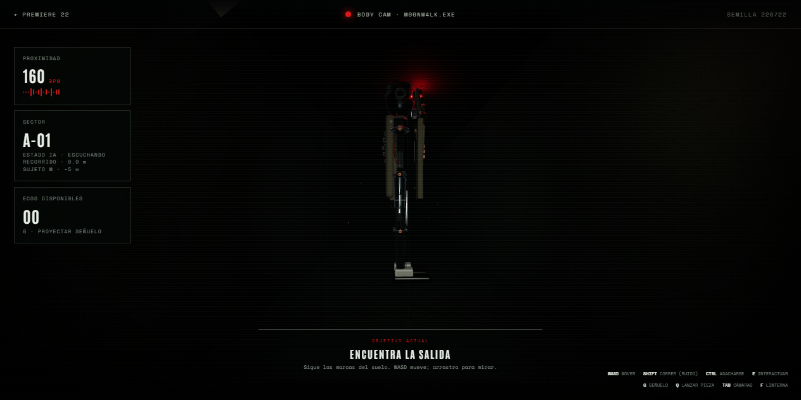
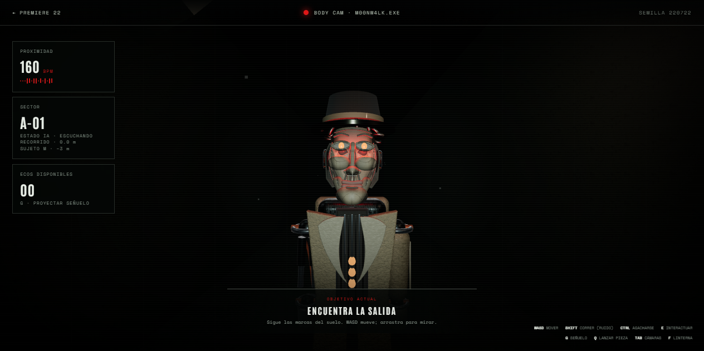
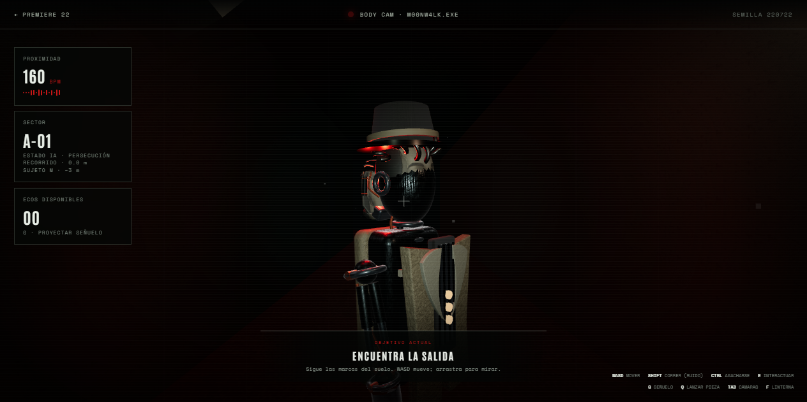
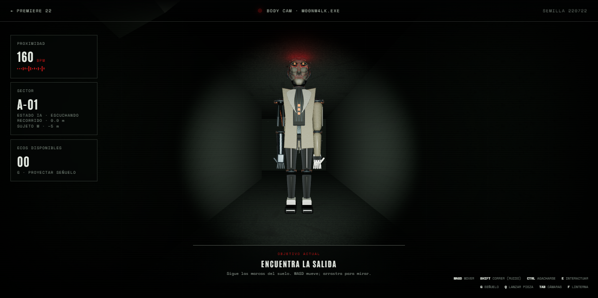

Referencia y baseline


Estado: plan aprobado por crítica independiente en la ronda 4.
Listón: el turnaround aprobado, evaluado con cámara, pose e iluminación repetibles.








p95 < 16,7 ms en 1280×720, calidad alta.Resultado medido: 59.582 triángulos, 11 texturas propias activas y p95 7,1 ms a 1280×720.